Two functions with the same big-O can differ by an order of magnitude in wall-clock time. The reason is rarely the algorithm on paper, it is how the code meets the machine: whether data is where the cache expects it, whether branches are predictable, whether the compiler could prove enough to optimise. These notes collect what I learned poking at that gap, from cache lines and the stack up through compiler flags and why a variable’s size is itself a performance decision.
Cache locality and branch prediction
- For smaller N, N^2 algorithm performs faster than NlogN algorithms , quick sort and merge sort are both NlogN algorithms but they perform worse, std::sort performs the best. Cache locality and branch predictability are more important factors.

- How to check cache size?, On my Mac I have: L1I=128kb, L1D=64kb and L2=4MB (per core), Cache line size = 128B
- Cache line is the smallest chunk of memory moved between RAM and CPU cache. When you load one byte, the CPU actually loads the entire cache line. x86: usually 64 bytes, in my MAC (M2): 128 bytes
- CPUs don’t load variables, they load cache lines. Nearby data is “free” once a cache line is loaded. This is called spatial locality, why it matters? Good layouts:
- arrays of structs (AoS) for sequential access
- tight structs that fit in one cache line
- Usually it goes on checking L1 cache first, then L2, then L3, then RAM. Each level is larger but slower.
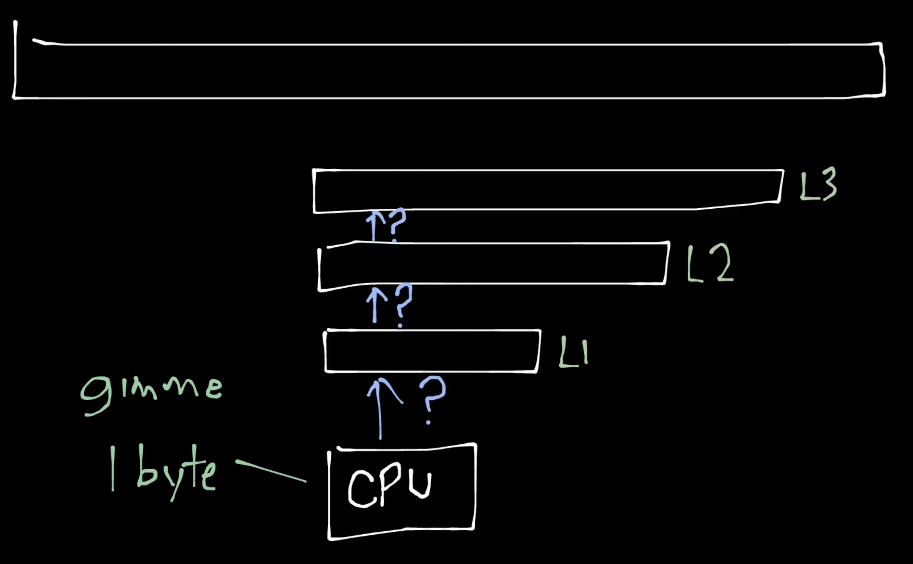
- There is soeme prefetching logic in modern CPUs that tries to predict what data will be needed next and loads it into cache ahead of time, based on access patterns. This depends vendor to vendor (prefetcher live b/w CPU and cache)How the CPU Cache Works (Spatial Locality)
This example demonstrates why the layout of the data structures that matters for performance.
Example1: ```cpp struct S { int x; // 4 bytes int y; // 4 bytes };
void what_is_cache(S s) { auto x = s.x; // Accessing x auto y = s.y; // Accessing y } ```
auto x = s.x; * Result: Cache Miss (First load). The CPU fetches the entire cache line containing s from RAM. This line now contains both x and y.
auto y = s.y; * Result: Cache Hit (Already in cache). Since y was pulled in during the first fetch, the CPU reads it directly from the high-speed cache.
Example2:
cpp auto get_sum(auto const &vec, auto const &indices) { int sum = 0; for (auto idx : indices) { sum += vec[idx]; // Accessing elements based on indices } return sum; }If indices are sequential (0,1,2,3…), we get many cache hits because accessing vec[idx] pulls in contiguous cache lines.
If indices are random (3, 1000, 42…), we get many cache misses because each access likely pulls in a new cache line from RAM.
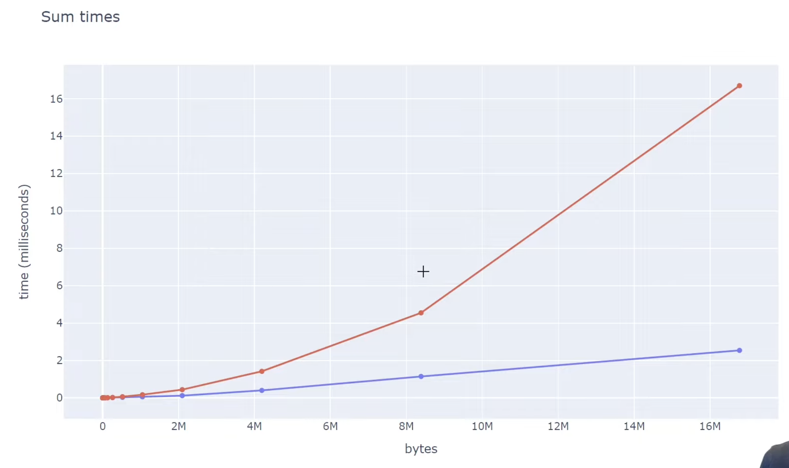
- The kinks are the cache sizes, in the above system L3 cache size is 8MB, so once the working set exceeds that size, cache misses increase significantly. But for inorder acess, spatial locality helps a lot. And after 8MB it didn't matter due to "cache prefeching", which loads data into cache before it's actually needed based on access patterns.
- Example3: Matrix Multiplication:
```cpp
void matmul_row_major_ijk(auto const &A, auto const &B, auto &C, int N) {
std::fill(C.begin(), C.end(), 0);
for (int i = 0; i < N; i++) {
for (int j = 0; j < N; j++) {
// i, j fixed, k varies
for (int k = 0; k < N; k++) {
C[i*N + j] += A[i*N + k] * B[k*N + j]; // (not changing) += (changing but one element at a time) * (jump k elements, hence bad for cache locality)
}
}
}
}
```
- If instead of ijk we loop, ikj or jik, we get better cache performance because we access contiguous memory locations more frequently. As C[i*N + j] is changing only once per i,j, A[i*N + k] is changing contiguously for k, and B[k*N + j] is changing but 1 element at a time, so better cache locality.- AoS vs SoA (Cache Efficiency in Loops):
- When we need to access all elements then AoS is fine but when we need to access only a few fields of a large collection of structs, SoA is much better.
- When processing large collections of data, how you organize your memory determines whether your CPU spends its time calculating or waiting for RAM.
Array of Structs (AoS):
struct Particle { float x, y, z; float velocity; }; Particle particles[1000]; // Array of Structs for (int i = 0; i < 1000; i++) { particles[i].velocity += 1.0f; // Updating only 'velocity' }- In AoS, each
Particleis 16 bytes. A 64-byte cache line loads 4 structs, but onlyvelocityis needed. The other 12 bytes (x, y, z) are wasted, leading to inefficient cache usage. Struct of Arrays (SoA):
struct Particles { float x[1000]; float y[1000]; float z[1000]; float velocity[1000]; }; Particles particles; // Struct of Arrays for (int i = 0; i < 1000; i++) { particles.velocity[i] += 1.0f; // Updating only 'velocity' }- In SoA,
velocityis contiguous. Each cache line loads multiple relevant values, maximizing utilization. This minimizes memory bandwidth waste, making SoA significantly faster for field-specific updates.
- Branch Prediction:
- Modern CPUs use branch prediction to guess the outcome of conditional operations (like if-else statements) before they are executed. If the CPU guesses correctly, it can continue executing instructions without interruption. However, if it guesses incorrectly, it must discard the speculative work and start over, which can lead to performance penalties.
- Example:
cpp for (int i = 0; i < 1000000; i++) { if (i % 2 == 0) { // Do something for even numbers } else { // Do something for odd numbers } } - In this loop, the branch predictor may struggle because the outcome alternates every iteration. This can lead to mispredictions and performance hits.
- To improve branch predictability, you can restructure your code to minimize unpredictable branches or use techniques like loop unrolling.
- Loop Unrolling Example:
cpp for (int i = 0; i < 1000000; i += 4) { // Handle 4 iterations at a time if (i % 2 == 0) { /* even */ } else { /* odd */ } if ((i + 1) % 2 == 0) { /* even */ } else { /* odd */ } if ((i + 2) % 2 == 0) { /* even */ } else { /* odd */ } if ((i + 3) % 2 == 0) { /* even */ } else { /* odd */ } } - By processing multiple iterations in a single loop iteration, you can reduce the number of branches the CPU needs to predict, improving overall performance. Why loop unrolling works? https://en.algorithmica.org/hpc/architecture/loops/ (Hint: go via the number of useful associated instructions being instructed per loop iteration we can go from 25% to 4/7 = 53% efficienct loops)
- In modern development, compilers (GCC/Clang/MSVC) usually unroll loops for you automatically if you use -O2 or -O3 flags (also new gen compilers are smart enough to do many trivial branch predictions like predicitng True False True False patterns etc), -O2 and -O3 are “optimization presets.”
- My exploration with O2 vs O3:
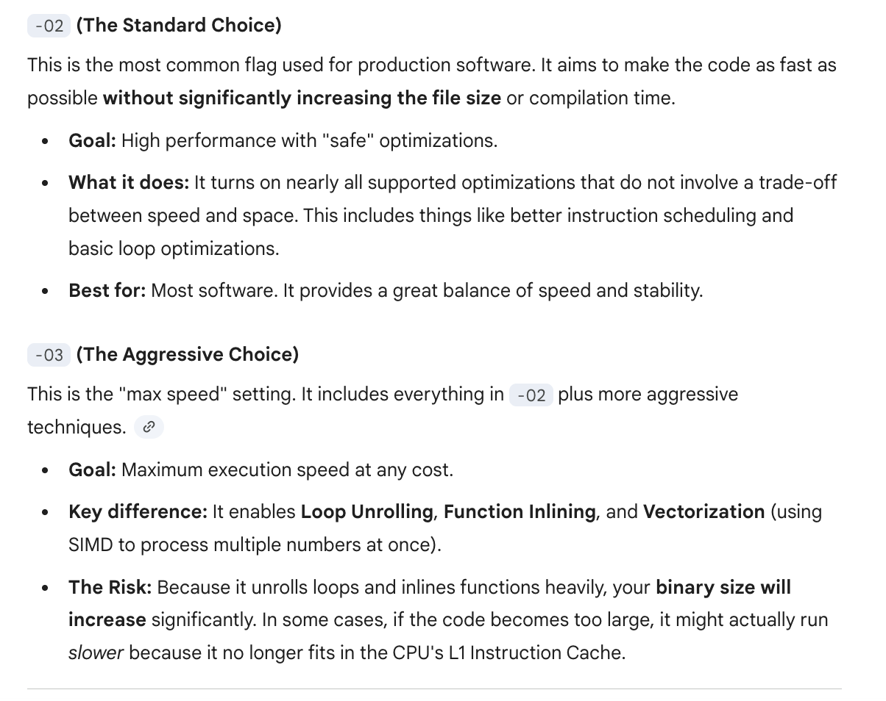

- I wrote a simple C++ matrix multiplication [code](../assets/images/posts/cpp-notes/bench.cpp) and compiled it using -o2 & -o3 optimization flags. As you can see, o3 generates a larger binary (due to unrolling and inlining) but achieves better performance due to reduced branching and improved instruction-level parallelism.
- Another example:
```cpp
for (int i = 0; i < N; i++) {
if (array[i] > threshold) {
process_high(array[i]);
} else {
process_low(array[i]);
}
}
```
- If the data in `array` is random, the branch predictor will struggle, leading to frequent mispredictions and performance degradation.
Why the stack is so fast
stack is aka: program stack, call stack, execution stack.
a program (executable) must ask the OS for memory space. The OS allocates it, but while running, if the program tries to access memory it shouldn’t, the OS terminates it with Segmentation Fault (core dumped).
external fragmentation: memory exists, but we still run out of usable space due to bad allocation patterns.

- requesting more memory takes time; hence using the heap gives a performance hit.
- if main memory (RAM) is exhausted, the OS gives storage-backed memory (aka virtual memory), but storage is thousands of times slower than RAM.

- even fetching data from main memory has a noticeable cost, hence we have CPU caches (different from registers).
- if data is present in cache → cache hit; otherwise → cache miss (CPU stalls while data is fetched from main memory).
- hence keeping data compact and contiguous is beneficial to maximize cache hits (this is locality: spatial + temporal).
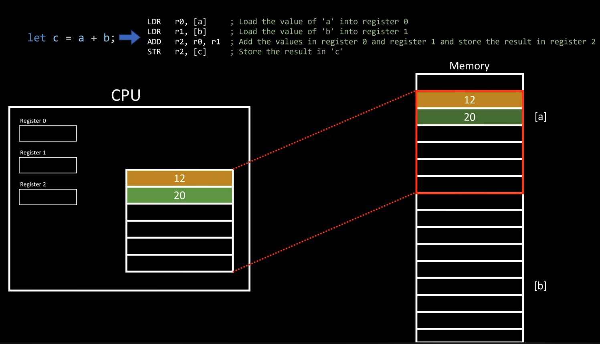
- the size of the preallocated stack region depends on the compiler / OS / platform.

might seem small, but 1 MB = 1,048,576 bytes → 1,048,576 / 8 = 131,072 64-bit integers.
- stack is a contiguous memory region:
- beginning of stack = stack origin
- the stack pointer (SP) keeps track of the top (yes, it usually grows downwards).
- the stack pointer must be stored somewhere → it lives in a CPU register.
- stack allocation is extremely cheap:
- allocation = adjust stack pointer (
SP +=/-= size) - no OS call, no searching for free blocks
- heap allocation requires OS involvement, metadata, bookkeeping, and fragmentation-handling strategies → slower.
- allocation = adjust stack pointer (
- when a function is called:
- a stack frame is pushed onto the stack.

- it contains:
- local variables
- function arguments (depending on ABI)
- saved registers
- return address (return-link)
- the starting point of the frame must be tracked so that after function completion, the stack pointer can be reset correctly.
- in recursion, if there is no base case:
- new stack frames keep getting added
- eventually, the stack runs out of space → stack overflow.
- each thread has its own stack:
- pros: no synchronization needed for local variables
- cons: fixed size per thread, memory overhead
this is one of the reasons shared data structures usually live on the heap.
nice video for reference by core dumped
What the compiler does for you
- A lot of things compiler can do for us to make the code faste:
- loop unrolling, splitting, fusion
- reordering instructions
- precomputing values
- branch prediction hints
- inlining functions
- dead code elimination
- constant propagation
- vectorization and so on!
- Some optimizations don’t work well with volatile variables (variables which can be changed by hardware, like in embedded systems where a sensor is linked to a memory address). Hence “volatile” forces the CPU to fetch the variable from memory every time it is being used, to push away the arrogant compiler optimizations.
cpp int some_int = 100; while(some_int == 100) // The compiler sees this loop & makes it while(true) { // Code that does NOT change 'some_int' }- The compiler might optimize this to an infinite loop, since it sees that ‘some_int’ is never changed in the loop.
- To prevent this, we can declare ‘some_int’ as volatile, as it might be changed by some external hardware.
- Downside of compiler optimizations is that they can mess up debugging, as the optimized code may not correspond directly to the source code. Using gdb with optimizations can overlook errors.
- Tail call optimization: When we have something like a recursive funciton, when we need it’s other operands in the memory as well which keeps on increasing the stack size. But if we pass the result of the function directly when we won’t be needed more stack frames, hence it would just be a loop. Example: in this code I ran a fact(5) with -o0 and -o3 optimizations
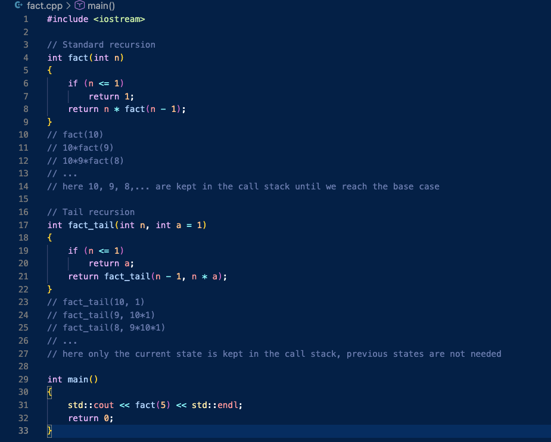
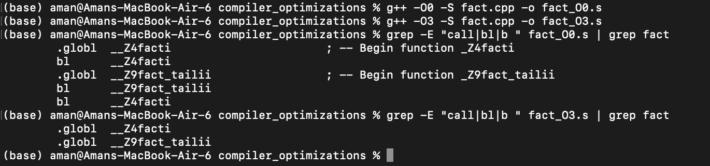
- bl stands for Branch with Link
- It saves the return address to the link register and jumps to the function.
- In the optimized version, it replaced the recursive "call" with a simple jump (or a loop) back to the top of the function, hence we can now calulate factorials of large numbers without stack overflow.
- Tail Recursion is the "proper" way to write, so that we dont depend on compiler to be clever enough- Branch Predictions:
- Modern CPUs use branch prediction to guess the outcome of conditional operations (like if-else statements) before they are executed. If the CPU guesses correctly, it can continue executing instructions without interruption. However, if it guesses incorrectly, it must discard the speculative work and start over, which can lead to performance penalties.
- I did an experiment with branch predictions and optimizations (-o0 vs -o3 vs -ofast) on diff array sizes:
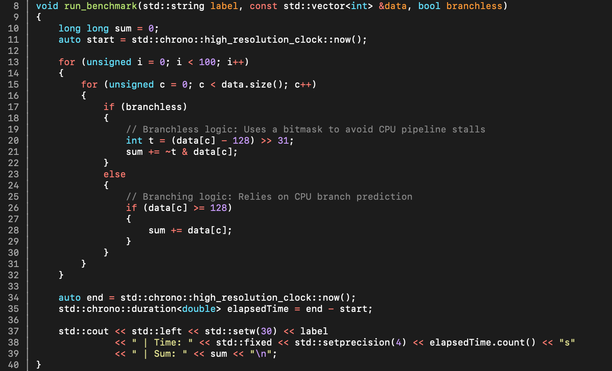
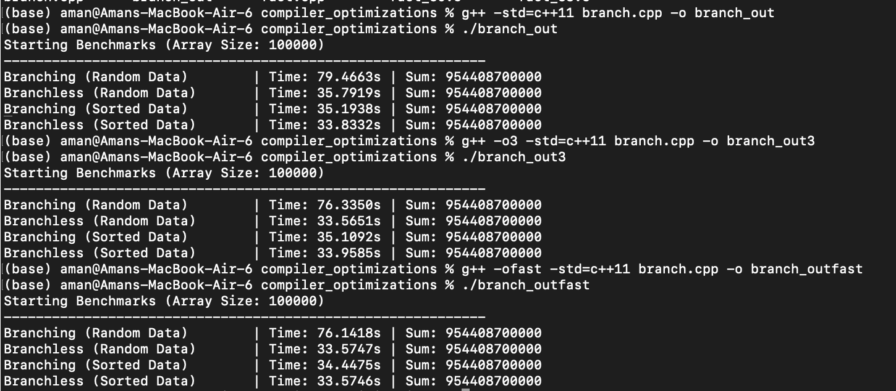
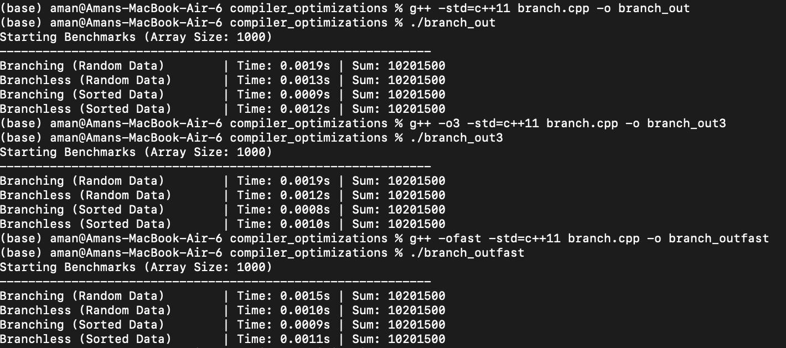
- Key take aways:
- Branch prediction is a hardware bottleneck that -O3 cannot always solve automatically.
- If-Conversion: Compilers like GCC with -O3 can convert branches to branchless conditional moves (cmov), making performance consistent for sorted and unsorted data.
- Paradoxically, -O3 can be slower than -O2: the cmov instruction has higher latency (especially on older CPUs). When placed on the critical path, this branchless optimization can underperform the branch predictor on predictable data.Optimization flags, measured
- Flags are options passed to the compiler to control the optimization level and behavior during the compilation process.
- Optimization flags:
- O0: (no optimization, fast compilation and good for debugging)
- O1: (some optimization, balances between speed and compilation time)
- O2: (more optimization, good for production code)
- O3: (maximum optimization, may increase binary size and compilation time)(also reorders floating point operations which may lead to precision issues)
- Ofast: (aggressive optimizations that may violate strict standards compliance)
- Os: (optimize for size, reduces binary size, basically enables all -O2 optimizations that do not increase size)
- Oz: (optimize for minimum size, even more aggressive than -Os)
- Og: (optimize for debugging, improves debugging experience)
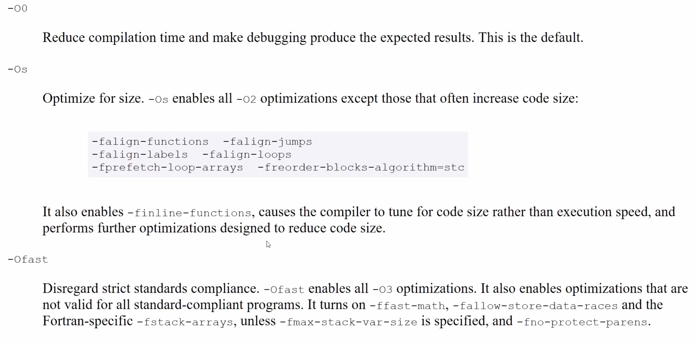
- Theoritically, Oz or Os can be fatser if they allow more code to fit in cache, but in practice O2 or O3 are often faster due to better overall optimizations (again it's dependent)- I ran some benchmarks to compare the size and performance of binaries compiled with different optimization flags. I then ran a bash script to see the size -m results of all the files piped with grep and i/o’ed to a csv file which was then used to generate plots using matplotlib. This is what i got (Code which was compiled was a simple loop to add elements from an array):
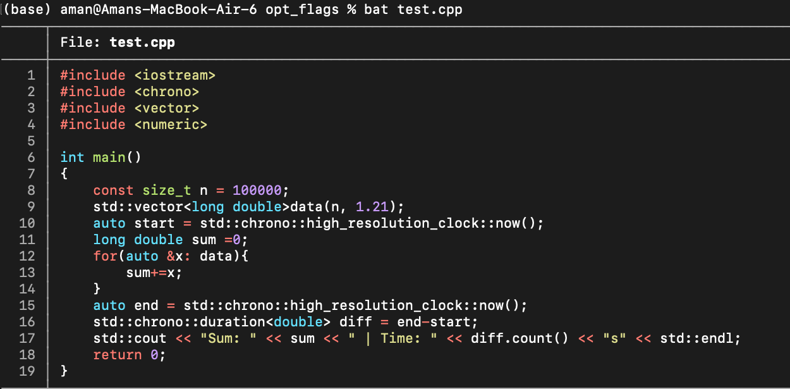
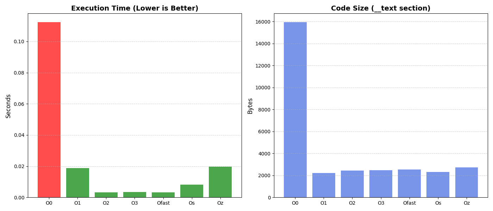
- O0 basically dumbs down the compiler, best for debugging.
- from my experiments i concluded that sometimes even O2 can outperform O3 in some cases, probably because O3's aggressive optimizations can lead to larger binaries that may not fit well in cache, negating some performance benefits.- Downside of compiler optimizations is that they can mess up debugging, as the optimized code may not correspond directly to the source code. Using gdb with optimizations can overlook errors.
- GCC and Clang both support these, but both’s implementaitions may vary slightly.
Why the size of a variable matters
Why Sizeof Variable Matters?
- Fixed-size types exist in C++, Rust (Systems Programming Languages), as compared to Python and JavaScript (Scripting Languages).
- In SPLs, you have explicit control over how much memory is used to represent data.
- Fixed types tell the compiler how much space is needed in memory.
- Computers operate in bytes (8 bits); hence sizes always appear in multiples of 8 (not arbitrary values like 3, 4, or 5).
- We might allocate more space to something that requires a smaller range by definition.
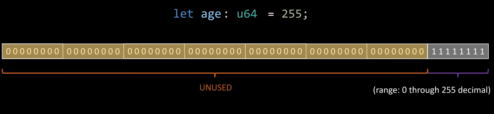
- Hence, we end up using more memory than necessary in scripting languages (since resource allocation is handled by the interpreter).
- Enforcing a fixed type avoids mis-allocations (e.g., rejecting a negative value for an
agevariable).
Performance Implications
- In scripting languages, once the interpreter assigns memory to variables, how does it later know whether those bits represent a string, number, or something else (since everything is machine code)?
- This is solved by attaching runtime type metadata (tags) to values. This enables runtime type checks and errors (Python throws errors; JavaScript often doesn’t).
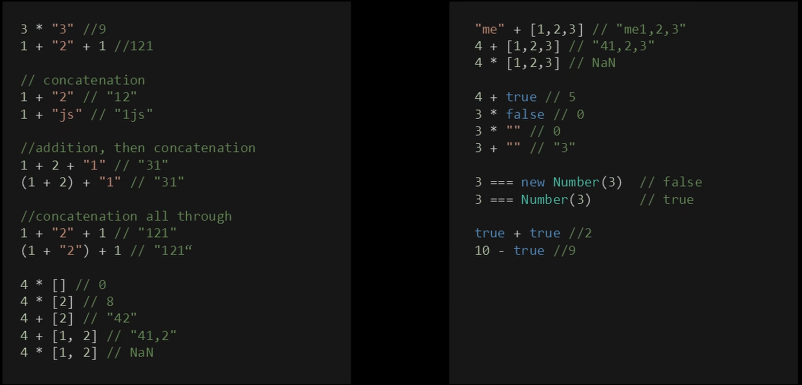
- These tags require extra memory.
- Tags must be:
- initialized,
- read,
- compared,
- written at runtime.
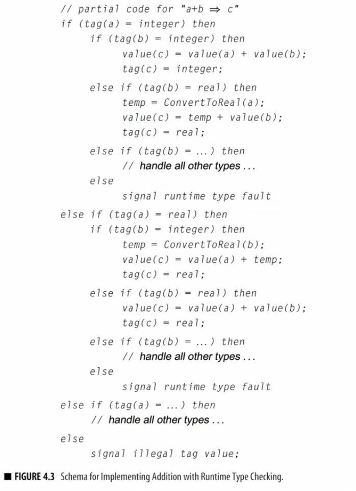
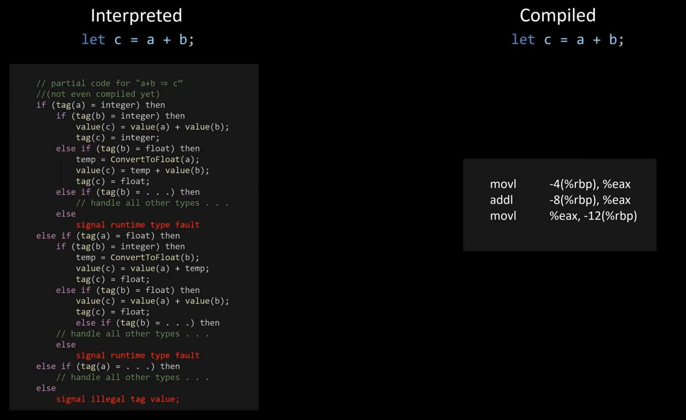
- In compiled languages, this overhead is removed. The compiler directly generates assembly that performs arithmetic without runtime type checks.
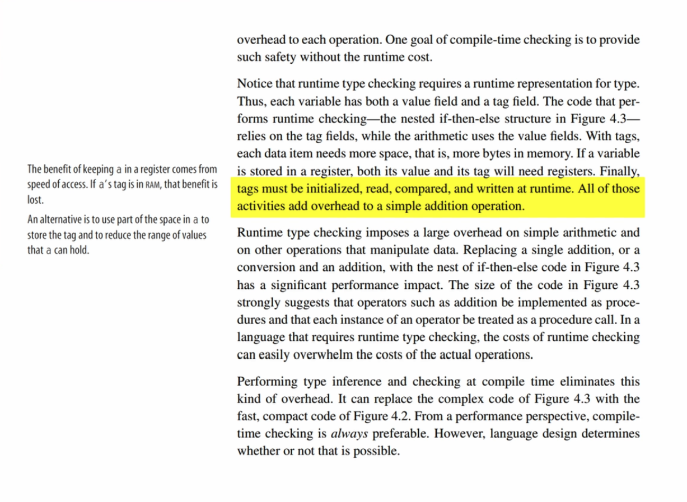
What if size is unknown at compile time?
- We keep references to memory regions that can grow or shrink at runtime (stack or heap).
- Stack: fixed-size, fast, scoped Heap: dynamic-size, flexible, slower